Créditos das imagens
As fotos e os trechos de vídeo deste site vêm do banco Pexels, cuja licença permite uso gratuito, comercial e não comercial, sem atribuição obrigatória. Mesmo assim, listamos as fontes. São imagens ilustrativas: não mostram o Recanto da Coruja nem os seus pratos, e devem ser trocadas por fotos próprias.
A trilha do vídeo é original, gerada por síntese para este projeto. O símbolo da coruja é uma proposta de identidade criada para este projeto.
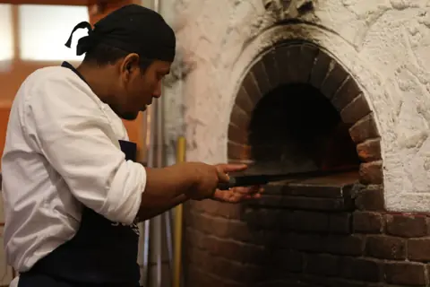 | Man Putting a Pizza in a Stone Oven | pexels.com/photo/14885422 |
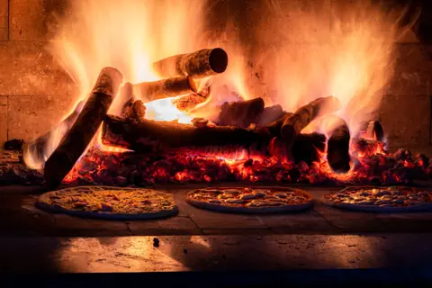 | Pizza in Oven | pexels.com/photo/18126715 |
 | Pizza in Furnace | pexels.com/photo/3343627 |
 | A Pizza Taken from an Oven | pexels.com/photo/13946695 |
 | A pizza with a slice missing from it on a wooden board | pexels.com/photo/27583268 |
 | Top View Photo Of Baked Pizza | pexels.com/photo/2147491 |
 | Close Up Photo of Delicious Looking Pizza | pexels.com/photo/3727192 |
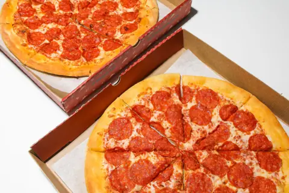 | Pizza in Boxes | pexels.com/photo/4109069 |
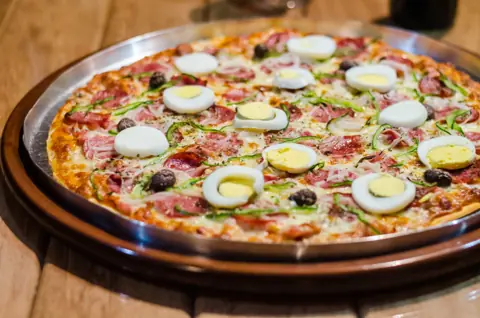 | Pizza With Egg Photo | pexels.com/photo/845812 |
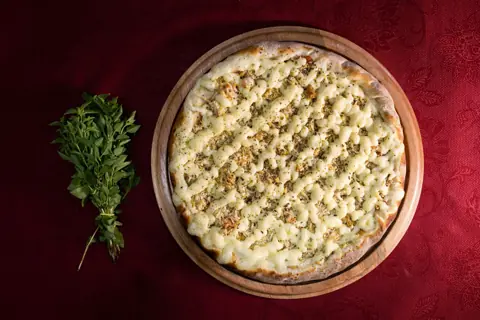 | Cheesy Pizza in a Round Wooden Tray | pexels.com/photo/6697454 |
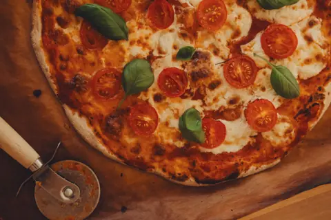 | Close-up of a Pizza | pexels.com/photo/27025471 |
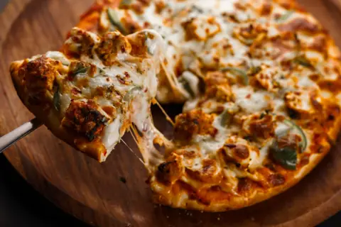 | Delicious Pepperoni Pizza Slice on Wooden Board | pexels.com/photo/29173098 |
 | Pizza With Red Pepper and Cheese | pexels.com/photo/1049620 |
 | Diverse Pizza Slices with Spices Overhead View | pexels.com/photo/40135620 |
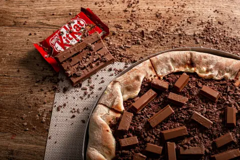 | Delectable Kitkat Cake on Wooden Surface (Guto Macedo) | pexels.com/photo/8444548 |
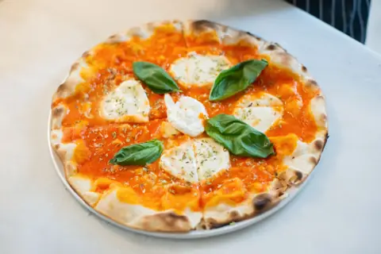 | A Thin Sliced Saucy Pizza Topped with Cream Cheese and Basil Leaves | pexels.com/photo/6605232 |
 | Close-up of Woman Eating Pizza | pexels.com/photo/17291590 |
 | Slice of Pizza in Hand | pexels.com/photo/27349458 |
 | Pizza in Box | pexels.com/photo/17870830 |
 | Stack of Boxes with Pizza | pexels.com/photo/21792435 |
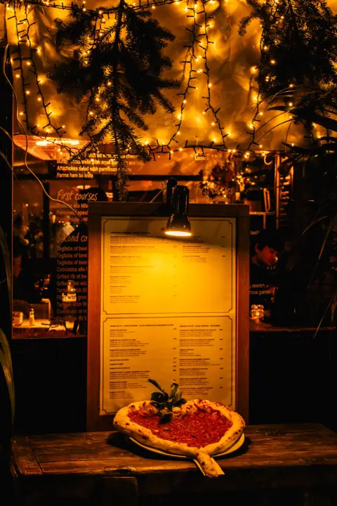 | Romantic Italian Restaurant with Menu and Pizza | pexels.com/photo/40074503 |
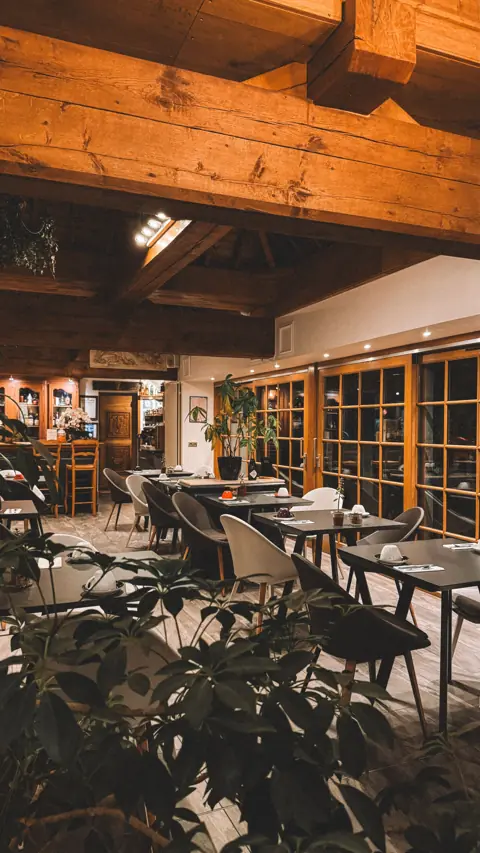 | Cozy Rustic Restaurant Interior with Wooden Beams | pexels.com/photo/30457533 |
 | Chef Preparing Pizza in Brick Oven Kitchen | pexels.com/photo/32293378 |
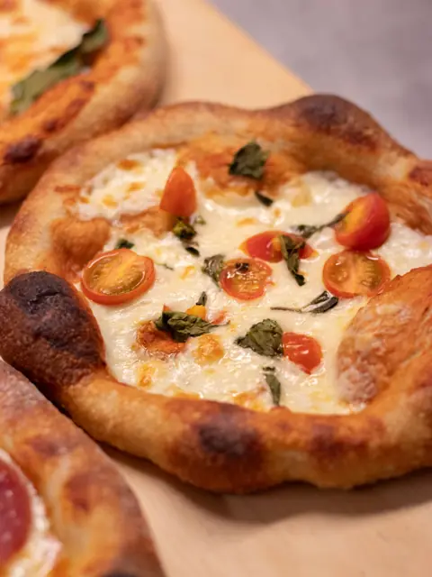 | Delicious Artisanal Margherita Pizza with Fresh Ingredients | pexels.com/photo/30478775 |
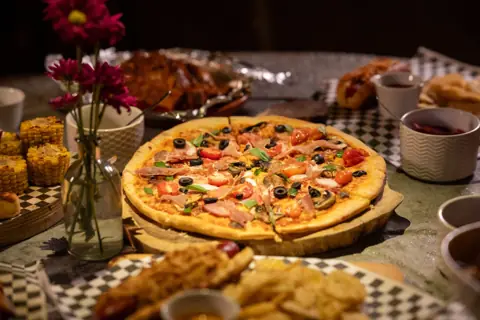 | Delicious Pizza and Feast Table Spread | pexels.com/photo/35896422 |
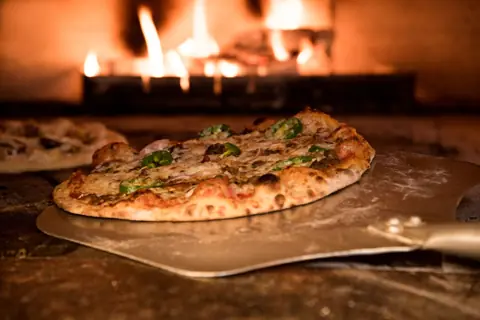 | Baked Pizza on Pizza Peel in Oven | pexels.com/photo/905847 |
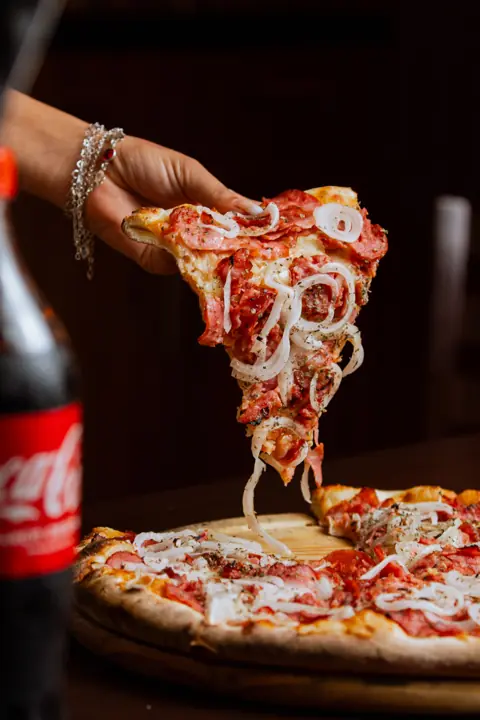 | Close-up of Pepperoni and Onion Pizza Slice | pexels.com/photo/31094831 |
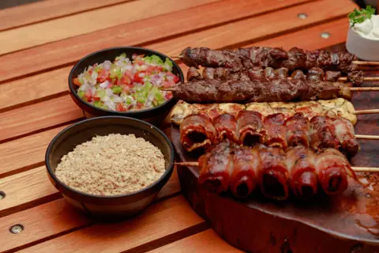 | Meat Skewers and a Salad Bowl on a Wooden Table | pexels.com/photo/17312401 |
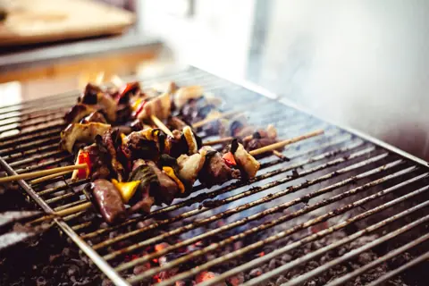 | Barbecues on Grill | pexels.com/photo/604660 |
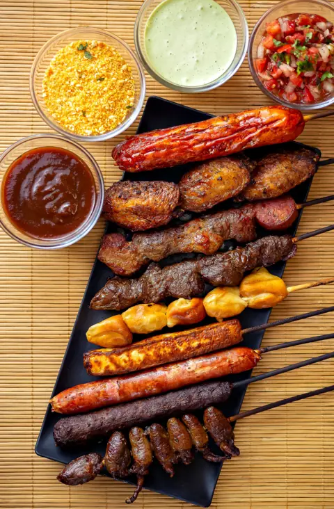 | A Delicious Assorted Grilled Food on Stick | pexels.com/photo/9200388 |
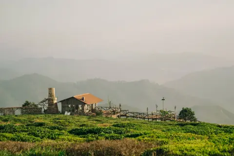 | Rural Cottage with View on Valley | pexels.com/photo/17140142 |
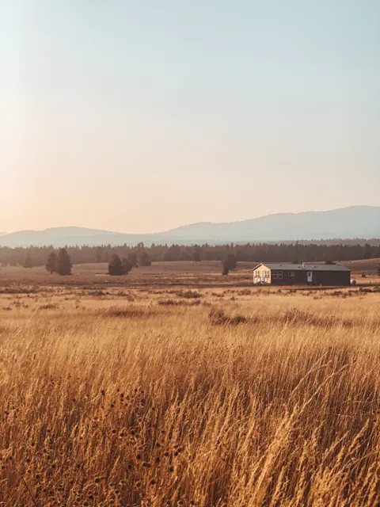 | Picturesque dry grassy meadow in countryside at sundown | pexels.com/photo/5316684 |
| Vídeo | Man Preparing Pizza Dough | pexels.com/video/6603329 |
| Vídeo | Adding Mozzarella into a Pizza | pexels.com/video/6603328 |
| Vídeo | Close Up Video of a Person Making Pizza | pexels.com/video/8627109 |
| Vídeo | A Person Adding Cheese while Making Pizza | pexels.com/video/3939628 |
| Vídeo | The Ultimate Fior Di Latte Mozzarella Cheese Pull, pizza by Rene | pexels.com/video/16423978 |
| Vídeo | Wood-fired Sourdough Pizza Margherita Time! | pexels.com/video/16013244 |
| Vídeo | Person Slicing a Pizza | pexels.com/video/6221683 |
| Vídeo | Chef Making a Pizza | pexels.com/video/6603837 |
| Vídeo | A Close-Up Video of Meat Being Grilled | pexels.com/video/5221128 |